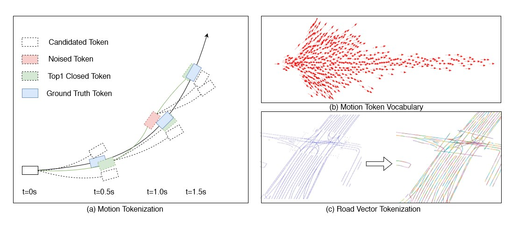
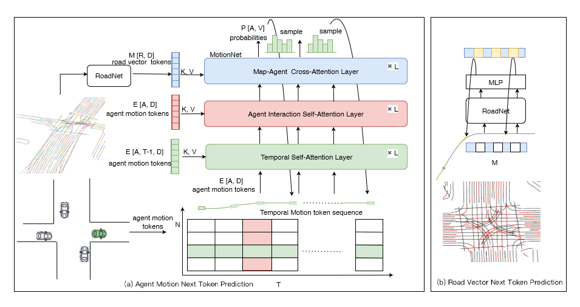
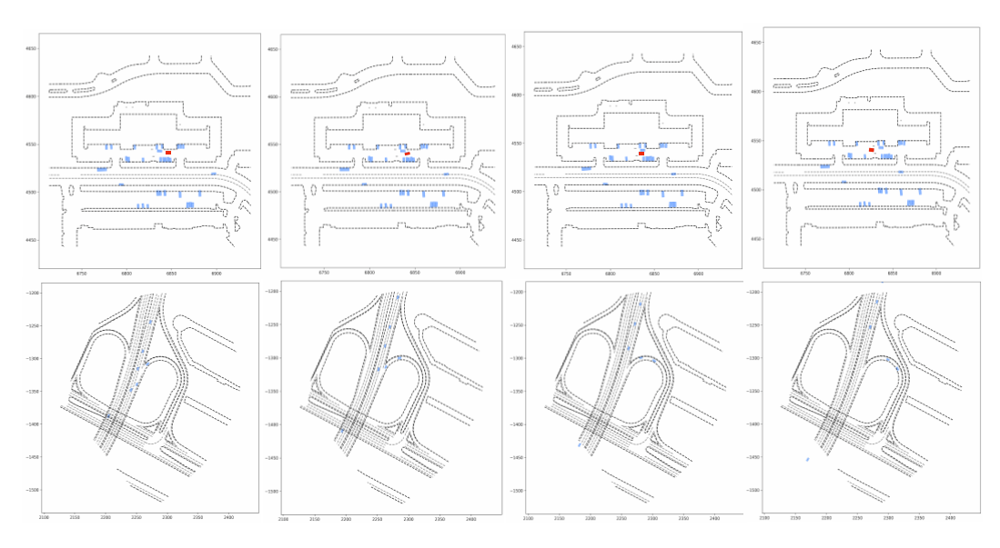
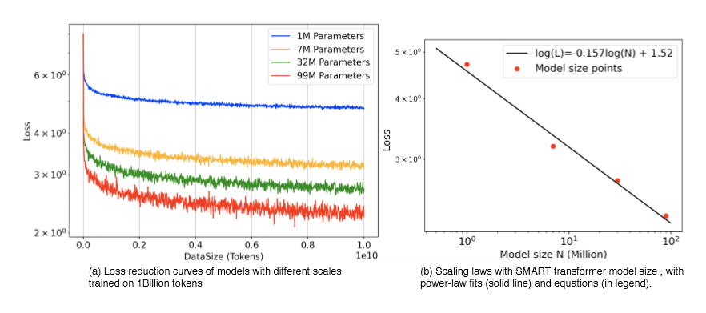
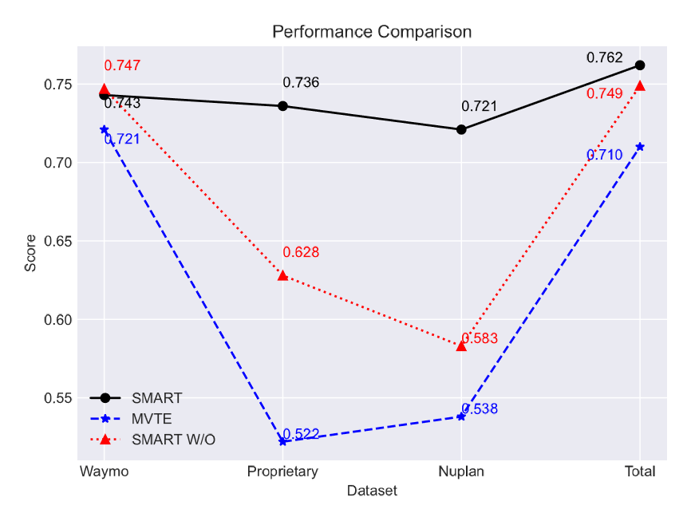

目次
SMART: Scalable Multi-agent Real-time Simulation via Next-token Prediction
Wei Wu*（Tsinghua University、SenseTime Research、wuwei@senseauto.com）、Xiaoxin Feng*（SenseTime Research、fengxiaoxin@senseauto.com）、Ziyan Gao*（SenseTime Research、gaoziyan@senseauto.com）、Yuheng Kan（SenseTime Research、kanyuheng@senseauto.com）
Tsinghua University、SenseTime Research
arXiv:2405.15677v3 [cs.RO]、2024年11月1日（第38回 Conference on Neural Information Processing Systems（NeurIPS 2024））
翻訳について：原文 PDF は
27_SMART_2405.15677.pdf（全 17 ページ）。本文、図の説明、図中ラベル、表、脚注、付録を訳出し、論文タイトルと参考文献は原文のまま掲載。図は原図を掲載し、英語ラベルの日本語訳を併記した。数式・数値・引用番号・コードの識別子は原文を維持。原文の記述に関する補足は「訳注」と明示し、本文と区別している。
脚注*：同等の貢献。
要旨
データ駆動型の自動運転モーション生成タスクは、データセットの規模の制約やデータセット間のドメインギャップの影響をしばしば受け、それが実世界のシナリオへの広範な適用を妨げている。この問題に対処するため、本論文では SMART を提案する。SMART は、ベクトル化された地図とエージェントの軌跡データを離散的な系列トークンとしてモデル化する、新しい自動運転モーション生成パラダイムである。これらのトークンはデコーダのみ（decoder-only）の Transformer アーキテクチャで処理され、時空間系列にわたる次トークン予測タスクとして学習される。この GPT 型の手法により、モデルは実際の運転シナリオにおけるモーションの分布を学習できる。SMART は生成型の Sim Agents チャレンジにおいて大半の指標で最先端の性能を達成し、Waymo Open Motion Dataset（WOMD）のリーダーボードで 1 位となり、際立った推論速度も示した。さらに SMART は、自動運転モーション領域における生成モデルとして、ゼロショット汎化能力を示す。NuPlan データセットのみで学習し WOMD で検証した場合でも、SMART は Sim Agents チャレンジで 0.72 という競争力のあるスコアを達成した。最後に、複数のデータセットから 10 億を超えるモーショントークンを収集し、モデルのスケーラビリティを検証した。これらの結果は、SMART がスケーラビリティとゼロショット汎化という 2 つの重要な性質を初歩的に再現し、大規模なリアルタイムシミュレーション応用の要件を予備的に満たしていることを示唆する。自動運転分野におけるモーション生成モデルの探究を促進するため、すべてのコードを公開した。ソースコードは https://github.com/rainmaker22/SMART で入手できる。
1 はじめに
自動運転の文脈では、ベクトル化された地図と車両の軌跡データを活用することで、モーションプランニング［17, 6, 19, 18, 7］、モーション予測［47, 11, 38］、Sim Agents［14］など、さまざまなモーション生成タスクが可能になる。従来の研究［9, 5, 27］は主に、エンコーダネットワークで運転シーンを表現し、デコーダネットワークでマルチモーダルなモーションを生成してきた。生成されたモーションは、ガウス［4］またはラプラス［53］の混合損失関数を用いて連続的な軌跡分布へ直接回帰される。この枠組みは回帰精度を重視する予測タスクでは高い性能を示すが、プランニング［3］や Sim Agents［26］のように、運転行動の安全性や妥当性を重視するモーション生成タスクでは性能が劣ることが多い。この性能低下の主な理由は次のとおりである。第一に、この枠組みは異なるエージェントのモーション間の将来の相互作用を表現しないため、シーンレベルの予測に一貫性がなくなる。第二に、モデルはデコーダ内で複数の意図クエリ（intention query）を初期化することでマルチモーダルなモーションを生成するが、これは通常 GPU メモリに制約されるため、モーションのモダリティ数が固定される。その結果、生成されたモダリティが将来の行動の多様性を十分に表現しているかは不確かである。第三に、これらのモデルは異なるデータセット間での汎化に苦労し、新しい都市環境や地図で学習するには新たなデータ収集が必要となる。
自己回帰型の大規模言語モデル（LLM）［12, 42］の登場は、人工知能に新しい時代をもたらした。これに着想を得て、運転モーション生成分野のいくつかの研究［30, 34］は、エージェントの軌跡を離散的なモーショントークンにトークン化し、交差エントロピー損失に基づく次トークン予測（Next Token Prediction、NTP）タスクを自己回帰に用いている。これらのモデルは依然としてエンコーダ・デコーダ構造を用いており、連続的なベクトル化地図と過去の軌跡データをエンコーダで符号化し、離散トークンの復号はデコーダモジュールのみで行う。連続分布を回帰する手法と比べ、NTP の自己回帰パラダイムには次の利点がある。モデルが段階的な次トークン予測を採用するため、各時間ステップでエージェントのモーション間の相互作用をモデル化でき、またモダリティ数に制限がないため、生成タスクにおいてより良い多様性が得られる。
しかし、既存の NTP ベースのモーションモデルも、前述の汎化性とスケーラビリティの問題には依然として対処できておらず、これは産業応用に重大な影響を及ぼす。汎化性とは、ゼロショット学習や少数ショット学習によって多様なデータセットで満足のいく結果を得ることを意味し、スケーラビリティとは、［16］で定義されたスケーリング則に従い、データセット規模やモデルパラメータの増加に伴ってモデル性能が向上することを指す。この不足には主に 2 つの要因がある。第一に、現在のモデルアーキテクチャは、限られたデータ規模という制約下での汎化性を欠いている。大規模な運転データの取得は高コストであるため、オープンソースのデータセットは通常、特定の都市域における数百時間程度の運転しかカバーしておらず、知覚や地域の違いに起因する大きなドメインギャップがある。第二に、単一次元の系列化を伴うタスクとは異なり、モーション生成では軌跡の時間次元と、地図とエージェント間の空間的相互作用の双方を系列化する必要がある。これらの課題に取り組むため、本論文では SMART モデル（Scalable Multi-Agent Real-Time Motion Generation via Next-token Prediction）を提案する。このモデルは地図データ用のトークナイザを組み込み、モデルの空間理解を高めるために次の道路トークンを予測する自己回帰予測タスクを提案する。続いて GPT 型のアプローチを採用し、時系列全体にわたってエージェントの軌跡をトークン化して、デコーダのみの Transformer モデルを構築する。デコーダのみの Transformer により、SMART は推論時に現時点で次フレームの次トークンを計算でき、推論のたびに過去のモーショントークンを再符号化する必要がなくなるため、リアルタイムかつインタラクティブな自動運転シミュレーションにおける推論効率が大幅に向上する。
まとめると、本論文のコミュニティへの貢献は次のとおりである。(1) ベクトル化された道路とエージェント軌跡の双方に対するトークン化方式を組み込み、デコーダのみの Transformer を用いて次トークン予測タスクで学習する、モーション生成の新しい枠組みを提案する。このアプローチは、自動運転のためのモーション生成アルゴリズムの設計に新たな知見をもたらす。(2) 運転モーション生成の分野において、異なるデータセット間でのモデルのゼロショット汎化性に初めて焦点を当てた。特に、NuPlan データセットのみで学習したモデルは、両データセットの地図領域に重なりがないにもかかわらず、WOMD のテストデータセットで良好な性能を示した。SMART モデルのスケーラビリティの実証的検証は、大規模基盤モデルの魅力的な性質を再現している。(3) SMART は生成型の Sim Agents チャレンジにおいて大半の指標で最先端の性能を達成し、WOMD のリーダーボード2で 1 位となった。さらに、SMART の 1 フレームあたりの推論時間は 15ms 以内であり、自動運転におけるインタラクティブシミュレーションのリアルタイム要件を満たしている。
2 関連研究
2.1 自己回帰型大規模モデルの性質
スケーラビリティとゼロショット汎化。べき乗則のスケーリング則［22, 12, 31］は、モデルパラメータ、データセット規模、計算資源の増大と機械学習モデルの性能向上との関係を数学的に記述するものであり、いくつかの明確な利点をもたらす。第一に、モデルサイズ、データサイズ、計算コストを拡大することで、より大きなモデルの性能を外挿できる。第二に、スケーリング則は一貫して飽和しない性能向上を示しており、モデルの能力を高めるうえでの持続的な優位性を裏付けている。ゼロショット生成とは、未見のデータセットの時系列に対して予測モーションを生成するモデルの能力を指す。ゼロショット生成に関する従来研究［29, 21］は通常、単一の時系列データセットで学習し、別のデータセットでテストする。本研究では、SMART モデルの学習に NuPlan データセットを、テストに WOMD の検証データセットを用いる。自動運転分野の既存手法［37, 40］は、汎化性と解釈性を高めるため、意思決定やプランニングの補助に LLM や VLM を用いることが多い。しかし、運転モーション分野の基盤モデルを直接構築し、スケーラビリティとゼロショット汎化性を検証しようとした研究は存在しない。
2.2 連続領域におけるトークナイザ
言語モデル［42, 43］は、テキストのトークン化に Byte Pair Encoding や WordPiece アルゴリズムを用いる。言語モデルに基づく視覚生成モデル［49, 48］も、2D 画像を 1D のトークン系列に符号化する必要がある。初期の試みである VQVAE［44］は、再構成品質は比較的中程度であったものの、画像を離散トークンとして表現できることを示した。運転モーション領域では、MotionLM［34］が、エージェント軌跡の連続するウェイポイント間の軸方向の差分を単純に一様量子化している。
2.3 運転モーション生成
本研究は、運転モーション生成における近年の進展に大きく依拠している。この問題には、連続的なモーション分布の回帰［33, 1, 39］、拡散モデル［50, 20］、離散的な自己回帰モデル［30, 34］など、幅広い生成モデルが適用されてきた。MotionDiffuser［20］は、複数エージェントにわたる将来軌跡の同時分布をモデル化する拡散ベースの表現手法であり、単純な予測器の設計と PCA 圧縮を活用して、効率的かつ最高性能のマルチエージェントモーション予測を実現している。これらの拡散ベースのモデルは個々のエージェントのマルチモーダルな将来軌跡を生成するが、取りうるエージェント移動の周辺分布しか捉えず、エージェントの将来モーション間の相互作用はモデル化しない。典型的な分布回帰モデルは、ガウス［36］やラプラス［53］といったパラメトリックな連続分布を用いて将来のモーション分布をモデル化する。これらのモデルの限界は、ガウス混合分布やラプラス混合分布が将来状態の分布を表現するのに十分柔軟かどうかが不確かな点にある。加えて、マルチモーダルな将来モーションを生成するために、これらのモデルはデコーダモジュールにマルチモーダルクエリとしてモーションのゴール候補［13］や学習可能な潜在埋め込み［45］を組み込む必要があることが多く、その結果、大きなメモリ使用量と推論時間の増加を招く。MotionLM［34］は、自動運転車におけるマルチエージェントモーション予測を言語モデリングタスクとして扱い、複雑な最適化や潜在アンカー埋め込みを必要としない簡素な自己回帰プロセスによってインタラクティブな軌跡を生成する。これを基礎として、Trajeglish［30］はマルチエージェントのオフライン閉ループシミュレーションを対象としている。
3 手法
本節では、動的な運転シナリオのための自己回帰生成モデルである SMART を紹介する。言語とエージェントのモーションはいずれも系列的であるが、その表現は異なる。自然言語は有限の語彙に含まれる単語で構成されるのに対し、エージェントのモーションは連続的な実数値データである。この違いから、3.1 節で概説するエージェントモーションと道路ベクトルのトークナイザに対する独自の設計（語彙の構築とモーション系列のトークン化を含む）が必要となる。3.2 節ではモデルのアーキテクチャを包括的に説明する。3.3 節では、提案モデルが時間系列内のモーショントークンの分布と空間系列内の道路トークンの分布を学習するために設計した学習タスクを詳述する。
3.1 トークン化
エージェントモーションのトークン化。連続領域に離散系列モデリングを適用するため、従来研究は通常 2 つのアプローチのいずれかに従う。VQVAE［44］や VQGAN［10］のような事前学習済みトークナイザを用いて連続特徴を離散トークンに符号化するか、連続特徴を正規化して連続値を等間隔の離散スロットに分割する［2, 34］かである。前者のアプローチでは、潜在語彙の構築にトークナイザ学習用の大量の生データが必要になることが多く、そうでなければトークナイザ自体が事前学習データセットに偏ってしまう。本研究は少数のデータサンプルで学習した場合にもモデルが効果的に汎化できることを目指しているため、SMART は明示的な軌跡特徴と地図特徴を離散化する方式を選ぶ。具体的には、［30］と同様に、データセット内の全エージェントの連続軌跡を固定時間間隔 \( t = 0.5s \) で区切って軌跡集合とする。次に、k-disks アルゴリズムを用いて軌跡集合をクラスタリングする。図1(b) に示すように、サンプリングされた軌跡が最終的なエージェントモーショントークン語彙 \( V_a \) となる。

図1：(a) 時刻 t=0s では、現在の車両状態を基準として、トークン集合の中から正解のバウンディングボックスに最も近いトークンを選択する。時刻 t=0.5s では、前ステップでマッチしたトークンを用いて次の予測トークンを選択する。時刻 t=1.0s では、ノイズを加えたトークンを基準として t=1.5s のトークンを決定する。この反復処理が続く。(b) 時間粒度 0.5s のモーショントークン語彙。(c) 元の道路ベクトル特徴は地図点の連続的な系列として表現されている。元の地図を各長さ 5 メートル以内の複数のセグメントに分割し、離散トークンとのマッチングを行う。最終的な地図は、異なる色のセグメントで表される道路ベクトルトークンで構成される。
図中ラベル：Candidated Token＝候補トークン、Noised Token＝ノイズ付加トークン、Top1 Closed Token＝最近傍（Top1）トークン、Ground Truth Token＝正解トークン、(a) Motion Tokenization＝モーションのトークン化、(b) Motion Token Vocabulary＝モーショントークン語彙、(c) Road Vector Tokenization＝道路ベクトルのトークン化
図1(a) に示すように、青いボックスは正解軌跡を離散化して得られたトークンを表す。0.5 秒間隔ごとにトークン語彙内で候補トークンを探索し、その中から現時点を表す適切な（最も近い）トークンを選択する。なお、エージェントのモーション系列をトークン化する過程で生じうるマッチング誤差を防ぐため、所与の期間 \( T \) における連続したモーション文全体に対してローリングマッチング方式を実装している。これは、次の時間ステップのトークンを、実際の正しい位置ではなく、現在マッチしているトークンの位置を参照してマッチングすることを意味する。しかし、Transformer デコーダはステップごとに逐次推論を行わなければならないため、この方式は誤差の累積（compounding errors）［32］による分布外（out-of-distribution）の問題を必然的に招く。特に自動運転の分野では、こうした累積誤差が衝突や地図外への逸脱を引き起こしうる［51］。この問題に対処するため、トークン化の過程にノイズを導入し、モデルが学習中に分布シフトを模擬できるようにする。具体的には、語彙中で正解トークンに最も近い top-k 個のトークンから 1 つを選ぶことで、現在マッチしたトークンに摂動を加える。そして次の時間ステップでは、摂動を加えた車両状態に基づいてモーショントークンをマッチングする。このデータ拡張手法により、モデルは分布シフトや累積誤差といった問題に効果的に対処でき、生成タスクにおける頑健性が高まる。最終的に、エージェントモーショントークンは \( A \in \mathbb{R}^{N_A \times N_T \times F_A} \) と表される。ここで \( N_A \) はエージェントの総数、\( N_T \) は時間ステップ数を表し、特徴サイズは \( F_A \) で、座標、方位（heading）、形状を含む。
道路ベクトルのトークン化。モデルの汎化能力を高めるため、道路ベクトルにもエージェントモーションと同様のトークン化処理を適用した。各道路ベクトルは、始点と終点の位置、長さ、旋回方向、およびデータセット由来のその他の意味情報を特徴として持つ有向の車線セグメントである。道路ネットワークの細粒度な入力を得るため、すべての道路ベクトルを長さ 5 メートル以下のトークンに分割する。モーション系列とは異なり、道路文のトークン化処理には時系列の依存性がない。図1(c) に示すように、道路文のトークン化は並列に行われ、元の道路ベクトルセグメントをすべて直接トークン化する。道路ベクトルトークンは \( R \in \mathbb{R}^{N_R \times F_R} \) と表される。ここで \( N_R \) は道路ベクトルの総数、\( F_A \) はトークンの特徴を表す（訳注：直前の式との整合からは \( F_R \) と思われる）。

図2：SMART フレームワークのアーキテクチャ。(a) 過去のモーショントークン、相互作用するエージェントのモーショントークン、および符号化された道路トークンを条件として、複数エージェントのモーショントークンを予測するデコーダのみの Transformer を学習する。モデルは次のモーショントークンを予測するよう学習される。(b) 提案する道路空間理解の学習タスクの説明図。
図中ラベル：road vector tokens＝道路ベクトルトークン、agent motion tokens＝エージェントモーショントークン、probabilities＝確率、sample＝サンプリング、Map-Agent Cross-Attention Layer＝地図-エージェント交差注意層、Agent Interaction Self-Attention Layer＝エージェント相互作用自己注意層、Temporal Self-Attention Layer＝時間方向自己注意層、Temporal Motion token sequence＝時間方向のモーショントークン系列、(a) Agent Motion Next Token Prediction＝エージェントモーションの次トークン予測、(b) Road Vector Next Token Prediction＝道路ベクトルの次トークン予測
3.2 モデルアーキテクチャ
図2 に、SMART の単純だが表現力の高いモデルアーキテクチャを示す。モデルは、道路地図を符号化するエンコーダと、モーショントークン埋め込みに基づいてカテゴリ分布を予測するモーションデコーダから構成される。
RoadNet：道路トークンエンコーダ。道路トークン間の関係をモデル化するためにマルチヘッド自己注意（MHSA）を用い、更新された道路トークンの符号化がモーショントークンの復号を補助する。\( i^{th} \) 番目の道路トークンについて、その埋め込み \( r_i \) からクエリを導出し、近傍トークン \( r_j \in R_i \) に注意を向けさせる。
\[ r_{i'} = \mathrm{MHSA}\left(q(r_i),\ k(r_j, \mathrm{RPE}_{ij}), v(r_j, \mathrm{RPE}_{ij})\right), \quad j \in R_i \tag{1} \]
ここで \( R_i \) は道路トークンの近傍集合を表す。地図の符号化に空間認識を取り込むため、\( j^{th} \) 番目のキー／バリューベクトルを、\( r_j \) と相対位置埋め込み \( \mathrm{RPE}_{ij} \)［8］の連結から生成する。
MotionNet：分解型エージェントモーションデコーダ。エージェントを符号化する主流の手法は、［35］が指摘するように、まずエージェントの移動の時間的ダイナミクスを捉えることを優先し、その後にエージェント-地図およびエージェント-エージェントの相互作用を統合する。分解型注意（factorized attention）は、時間スケールにわたる詳細なエージェント-地図相互作用を効果的に捉える［28］。本研究では、マルチヘッド交差注意（MHCA）を備えた分解型 Transformer アーキテクチャを活用し、時系列に沿った複雑な道路-エージェント間およびエージェント-エージェント間の関係を復号する。クエリ中心（query-centric）の手法［52］と同様に、相対位置埋め込みを用いてエージェントごとの局所座標系を区別し、対称的な符号化を可能にする。時間ステップ \( t \) における \( i^{th} \) 番目のエージェントを例にとる。式 2a に示すように、エージェントモーショントークンの埋め込み \( e_i^t \) から導出したクエリに対し、時間ステップ \( t-\tau \) から \( t-1 \) までの \( i^{th} \) 番目のエージェントのトークン埋め込みと、対応する相対位置埋め込みに基づいてキーとバリューを計算することで、時間方向の注意を適用する。
\[ e_{i'} = \mathrm{MHSA}\left(q(e_i^t), k(e_i^{t-\tau}, \mathrm{RPE}_i^{t,t-\tau}), v(e_i^{t-\tau}, \mathrm{RPE}_i^{t,t-\tau})\right), \quad 0 \lt \tau \lt t \tag{2a} \]
\[ e_{i'} = \mathrm{MHCA}\left(q(e_i^t), k(r_j, \mathrm{RPE}_{ij}), v(r_j, \mathrm{RPE}_{ij})\right), \quad j \in N_i \tag{2b} \]
\[ e_{i'} = \mathrm{MHSA}\left(q(e_i^t), k(e_j^t, \mathrm{RPE}_{ij}^t), v(e_j^t, \mathrm{RPE}_{ij}^t)\right), \quad j \in N_i \tag{2c} \]
同様に、式 2b と式 2c では、エージェント-地図およびエージェント-エージェントの注意におけるキーとバリューを、それぞれ近傍の道路トークン \( r_j, j \in N_i \) とエージェントのモーショントークン \( e_j^t, j \in N_i \) から導出する。ここで近傍集合 \( N_i \) は 50 メートルの距離しきい値によって決定される。時間方向、エージェント-エージェント、エージェント-地図の注意を順に積み重ねて 1 つの融合ブロックとし、このブロックを \( K \) 回繰り返す。
3.3 時空間の次トークン予測
学習段階では、SMART が交通シーンにおける時間的・空間的関係を理解するよう学習させる。これは RoadNet と MotionNet に対する 2 つの次トークン予測タスクによって実現され、モデルは 2 つのタスクの目的関数の和で最適化される。
道路ベクトルの次トークン予測。図2(b) に示すように、道路ベクトル NTP タスクは、RoadNet が道路ベクトル入力の空間構造を学習することを目的とする。エージェントのモーションとは異なり、道路ベクトルは系列ではなくグラフを形成するため、次トークン予測タスクを直接適用するのは難しい。この問題に対処するため、道路の元のトポロジー情報を抽出し、先行-後続の接続関係に基づいて道路ベクトルトークンを系列的な関係でモデル化する。図2(b) に描かれているように、事前学習の NTP タスクでは、道路トポロジーに基づき、先行する道路トークンを用いて後続の道路ベクトルトークンを予測する。このアプローチでは、RoadNet が順序のない道路ベクトル間の接続性と連続性を理解する必要がある。トークン化された単一の道路ベクトル系列に対する損失関数は次のように定義される。
\[ \mathrm{loss}(\gamma) = -\sum_{j=1}^{J}\sum_{i=1}^{V_r}(\mathrm{r}_i^{j+1} == \mathrm{r}_{i^{gt}}^{j+1}) \log(p_\gamma(\mathrm{r}_i^{j+1} \mid \mathrm{r}_i^{1:j})) \tag{3} \]
ここで \( p_\gamma(\mathrm{r}_i^{j+1} \mid \mathrm{r}_i^{1:j}) \) は \( \gamma \) でパラメータ化された RoadNet が予測するカテゴリ分布を表し、\( J \) はまだ道路ベクトルトークンに分割されていない完全なポリラインを表し、\( \mathrm{r}^{1:j} \) は先行する道路トークンの埋め込みを表し、\( \mathrm{r}_i^{j+1} \) は次に予測される道路ベクトルトークンである。この損失関数により、RoadNet は先行トークンが与えられたときに正しい次の道路ベクトルトークンを予測するよう学習し、道路ネットワーク内の空間的な連続性と接続性を捉えられる。
モーションの次トークン予測。モーション NTP タスクは、MotionNet がエージェントのモーションにおける時間的依存性だけでなく、エージェント-地図およびエージェント-エージェント間の空間的依存性も理解することを目的とする。SMART は、正解トークンラベルの分布と予測分布の間の交差エントロピーを最小化するよう学習される。形式的には、トークン化された単一のモーション文に対する損失関数は次式で与えられる。
\[ loss(\theta) = -\sum_{t=1}^{T}\sum_{i=1}^{V_a}(a_i^{t+1} == a_{i^{gt}}^{t+1}) log(p_\theta(a_i^{t+1} \mid e_i^{1:t}, r_j)) \tag{4} \]
ここで \( p_\theta(a_i^{t+1} \mid e_i^{1:t}, m_j) \) は \( \theta \) でパラメータ化されたモデルが予測するカテゴリ分布を表し（訳注：式 (4) では条件が \( r_j \) であり、本文の \( m_j \) と表記が一致していない）、\( e_{1:t} \) は過去のトークン化されたエージェントモーション埋め込み、\( a_i^{t+1} \in A \) は次に予測されるエージェントモーショントークン、\( r_j \) はトークン化された近傍の道路ベクトル系列である。なお、SMART は分類によって自己回帰を行う［41］。カテゴリ型の出力分布を選ぶことには重要な利点がある。出力分布の構造に制約を課さないため、モデルはマルチモーダルな分布を含む任意の分布を学習できる。多様なデータセットのエージェントトークンや道路トークンはそれぞれ異なる出力分布パターンに従いうるため、この柔軟性は基盤モデルにとって特に価値がある。
4 実験
SMART モデルの汎化性とスケーラビリティを検証するため、広範な実験を行い、さまざまな規模のモデルを学習した。公式の WOMD Sim Agents Challenge（WOSAC）では、WOMD データセットのみで学習した SMART の 700 万パラメータ（7M）モデルを用いた。同時に、SMART 7M モデルは汎化実験とアブレーション研究にも用いた。スケーリング則の実験では、追加のデータセットを統合し、複数の規模のモデルを学習した。すべての実験において、テストデータセットには WOMD から分割した検証データセットを用いた。SMART アーキテクチャの詳細なハイパーパラメータは A.1 節に記載している。以降の節では、4.1 節で WOSAC ベンチマーク［26］において SMART が生成したロールアウトの結果を示す。SMART の汎化性とスケーラビリティの評価は、それぞれ 4.2 節と 4.3 節で詳述する。最後に、4.4 節で設計手法のアブレーション分析を行う。
| 手法 | Realism Meta metric↑ | Kinematic metrics↑ | Interactive metrics↑ | Map-based metrics↑ | minADE↓ |
|---|---|---|---|---|---|
| SMART 7M | 0.6587 | 0.4190 | 0.8014 | 0.8523 | 1.7453 |
| Trajeglish［30］ | 0.6451 | 0.4166 | 0.7845 | 0.8216 | 1.5712 |
| MVTE［46］ | 0.6448 | 0.4202 | 0.7666 | 0.8387 | 1.6770 |
| VPD-PRIOR | 0.6315 | 0.4261 | 0.7233 | 0.8330 | 1.3400 |
| QCNeXt［53］ | 0.4538 | 0.3109 | 0.5654 | 0.5051 | 1.0830 |
| MultiPath［45］ | 0.4766 | 0.1792 | 0.6380 | 0.6866 | 2.0517 |
表1：WOMD 2023 Sim Agents ベンチマークにおける最先端モデルとの比較。
列見出し：Realism Meta metric＝リアリズム総合指標、Kinematic metrics＝運動学指標、Interactive metrics＝相互作用指標、Map-based metrics＝地図ベース指標（以下の表も同様）
4.1 モーション生成タスクでの比較
性能比較。提案する SMART を、拡散モデル［15］、連続分布回帰モデル［46, 36］、次トークン自己回帰モデル［30］を含む既存のモーション生成手法と比較する。Sim Agents チャレンジの評価指標は 2 度変更されているため、従来の手法とより広く比較できるよう、WOMD Sim Agents 2023 と 2024 の両ベンチマーク［26］で本モデルの性能をテストした。表1 と表2 に示すように、SMART は最良の Realism Meta metric を達成するだけでなく、高い予測精度も達成している。SMART の地図とモーションのモデル化手法により、従来研究よりも効果的にデータ内の行動分布を学習できる。特に、SMART-zeroshot は NuPlan データセットのみで学習し、Waymo のテストセットで直接推論したモデルを表す。表2 に示すように、このモデルは MVTE に近い性能を達成している。より詳細な比較は A.2 節を参照されたい。
| 手法 | Realism Meta metric↑ | Kinematic metrics↑ | Interactive metrics↑ | Map-based metrics↑ | minADE↓ |
|---|---|---|---|---|---|
| SMART 101M | 0.7614 | 0.4786 | 0.8066 | 0.8648 | 1.3728 |
| SMART 7M | 0.7591 | 0.4759 | 0.8039 | 0.8632 | 1.4062 |
| BehaviorGPT | 0.7473 | 0.4333 | 0.7997 | 0.8593 | 1.4147 |
| GUMP | 0.7431 | 0.4780 | 0.7887 | 0.8359 | 1.6041 |
| MVTE | 0.7302 | 0.4503 | 0.7706 | 0.8381 | 1.6770 |
| SMART-zeroshot | 0.7210 | 0.4311 | 0.7806 | 0.8099 | 2.5703 |
| VBD | 0.7200 | 0.4169 | 0.7819 | 0.8137 | 1.4743 |
| TrafficBOTv1.5 | 0.6988 | 0.4304 | 0.7114 | 0.8360 | 1.8825 |
| congniBOTv1.5 | 0.6288 | 0.3293 | 0.7129 | 0.6918 | - |
表2：WOMD 2024 Sim Agents ベンチマークにおける最先端モデルとの比較。
効率の比較。SMART はマルチエージェントのモーション生成においても際立った速度を示す。従来のエンコーダ・デコーダモデル［34, 36］は、マルチモーダルなモーションを生成するためにデコーダモジュールで複数のクエリ埋め込みを必要とするため、高い計算コストに悩まされる。デコーダのみの Transformer アーキテクチャの利点により、SMART は推論時に現時点で次フレームの次トークンを計算するだけでよく、過去のモーショントークンを再符号化する必要がない。過去の観測時間区間で計算したトークン埋め込みを再利用することで、エージェントモーションデコーダの計算量は \( O(N_A N_T) + O(N_A N_R) + O(N_A^2) \) に削減される。これに対し、［24］のようなエンコーダ・デコーダモデルでは、エンコーダモジュールの計算負荷に加えて、軌跡のマルチモダリティを生成するために \( O(N_A^2 N_M) + O(N_A N_M N_R) \) の追加計算が必要となる。ここで \( N_M \) はモダリティ数を表す。SMART の 1 ステップあたりの平均推論時間は地図トークンとエージェントモーショントークンの数に影響され、5〜20 ms の間で変動し、平均は 10 ms 未満である。したがって、自動運転におけるインタラクティブなリアルタイムオンラインシミュレーションの現在のニーズを十分に満たしている。
4.2 汎化
異なるデータセットに対するゼロショット汎化。ゼロショット生成とは、異なるデータセットの時系列に対してモーションを生成するモデルの能力である。本研究では、NuPlan データセットの学習データを用いて SMART モデルを学習し、WOMD 検証データセットのテストデータで評価する。表3 に示すように、SMART* は総合指標において依然として良好な性能を達成している。エージェントの位置と方位について較正された正解値の精度がデータセット間で大きく異なるため、エージェントの運動学指標ではギャップが大きくなり、スコアが低くなる可能性がある。しかし SMART* は、エージェントの相互作用と走行可能地図の指標において優れた汎化を示した。特筆すべきは、2 つのデータセットの規模に大差はないため、SMART モデルは少量のデータでの学習に基づいて良好な汎化能力を持ちうるという点である。
| 手法 | Kinematic metrics↑ | Interactive metrics↑ | Map-based metrics↑ | minADE↓ |
|---|---|---|---|---|
| SMART | 0.4537 | 0.8034 | 0.8514 | 1.5127 |
| SMART* | 0.4161 | 0.7853 | 0.7970 | 2.3041 |
| SMART** | 0.4310 | 0.8087 | 0.8559 | 1.5671 |
表3：異なるデータセットに対するゼロショット汎化。SMART は WOMD のみで学習したモデルを表す。SMART* は NuPlan データセットのみで学習したモデルを表す。SMART** は SMART* モデルをもとに、WOMD 上で初期学習率 0.0001 で 1 エポックのファインチューニングを行ったモデルを表す。
未見シナリオに対するゼロショット汎化。図3 に示す複数の地図シナリオは WOMD にのみ存在し、NuPlan データセットには存在しない。ネットワークアーキテクチャやパラメータ調整に変更を加えることなく、NuPlan のみで学習した SMART はこれらのシナリオで十分な結果を達成しており、SMART の汎化能力を裏付けている。
4.3 スケーラビリティ
先行研究［22, 42］は、大規模言語モデル（LLM）を大規模化すると、テスト損失 \( L \) が予測可能な形で減少することを確立している。この傾向は、パラメータ数 \( N \)、学習トークン数 \( T \) と相関し、べき乗則に従う。
\[ log(L) = \beta log(X) + \alpha \tag{5} \]
ここで \( X \) は \( N, T \) のいずれかである。指数 \( \alpha \) はべき乗則の滑らかさを反映し（訳注：式 (5) の形からは、べき指数に相当するのは \( \beta \) であり、\( \alpha \) は切片である）、\( L \) は削減不能な損失で正規化した削減可能な損失を表す。スケーリング則の検証に用いたデータソースの詳細は A.3 節に記載している。全体として、220 万シナリオ（0.5s のエージェントモーショントークン化では 10 億モーショントークン）を含む学習セットで、100 万から 1 億パラメータまでの 4 つのサイズのモデルを学習した。
モデルパラメータに関するスケーリング則。モデルサイズの増加に伴うテスト損失の傾向を調べる。100,000 の交通シナリオからなる検証セットで、最終的なテスト交差エントロピー損失 \( L \) を評価した。結果を図4 にプロットした。ここでは、モデルサイズ \( N \) の関数として損失 \( L \) に明確なべき乗則のスケーリング傾向が観察された。このべき乗則のスケーリング則は次のように表せる。
\[ log(L) = -0.157 log(X) + 1.52 \tag{6} \]
これらの結果は SMART の高いスケーラビリティを検証するものであり、モデル性能がデータセット規模に応じてどのようにスケールするかについて貴重な知見を与える。
4.4 アブレーション
本研究では、SMART の各構成要素の有効性を検証することを目的とする。結果を表4 に示す。\( M1 \) と表記する初期モデルは 3.2 節で述べたアーキテクチャ上に構築され、エージェントのトークン化のみを用いる。道路ベクトル状態を離散トークンにトークン化する道路ベクトルのトークン化を \( M2 \) で導入すると、汎化能力において \( M1 \) を大きく上回る改善が得られる。モデル \( M1 \) と \( M2 \) を比較すると、WOMD データセットのみで学習した場合、道路ベクトルのトークン化によって総合指標がある程度低下することがわかる。離散化された地図トークンでは、道路に関する細かな幾何情報の一部が失われる可能性があると推測している。\( M4 \) は、推論時の累積誤差と分布シフトに対処するよう設計された、ノイズを加えたエージェントモーションのトークン化を組み込んでいる（訳注：表4 ではノイズ付きエージェントトークン化（NAT）が最初に加わるのは \( M3 \) であり、\( M4 \) で新たに加わるのはノイズ付き道路ベクトルトークン化（NRVT）である。本文と表の対応が一致していない）。この変更により、相互作用指標と地図ベース指標の両方が向上する。

図3：テストセットから選んだ代表的な 2 つのシナリオにおける閉ループプランニングの定性的結果。各シナリオ（各行）は 8 秒間であり、2 秒間隔で 4 枚のスナップショットを示す。SMART はシナリオ内のすべてのエージェントを制御している。1 行目は駐車場エリアを示す。図中の赤い車両は、駐車場内で前方に停止している車両を効果的に迂回した。2 行目はランプ区間での曲率の大きい U ターンの場面を示しており、ランプの右車線の交通流は SMART の制御下でランプからの退出行動を完了している。さらなる動画については補足資料を参照されたい。

図4：データセット規模の制約から、合計 10 億トークンで 1M から 101M までの複数の規模のモデルを学習した。(a) 異なるモデルの学習損失。(b) 軸はすべて対数スケールである。べき乗則のスケーリング則は実線で表される。指数 \( \beta = -0.157 \) は、SMART モデルを大規模化するとテスト損失 \( L \) が滑らかに減少することを示唆している。
図中ラベル：(a) Loss reduction curves of models with different scales trained on 1Billion tokens＝10 億トークンで学習した異なる規模のモデルの損失減少曲線、DataSize (Tokens)＝データサイズ（トークン数）、Loss＝損失、1M/7M/32M/99M Parameters＝100 万／700 万／3200 万／9900 万パラメータ、(b) Scaling laws with SMART transformer model size, with power-law fits (solid line) and equations (in legend)＝SMART の Transformer モデルサイズに関するスケーリング則（実線はべき乗則による当てはめ、凡例に式）、Model size points＝各モデルサイズの点、Model size N (Million)＝モデルサイズ N（百万）
5 結論
本論文では、ベクトル化された地図とエージェントの軌跡データを活用し、GPT 型の枠組みにおいてデコーダのみの Transformer アーキテクチャで処理する、自動運転モーション生成の新しいパラダイムである SMART を提案した。SMART が、大規模モデルの発展に不可欠な 2 つの重要な性質、すなわちスケーラビリティとゼロショット汎化を再現していることを確認した。本研究の知見とすべてのコードの公開が、自動運転分野におけるモーション生成モデルのさらなる探究と開発を促し、最終的により信頼性の高い自動運転システムに貢献すると考えている。
| SMART | WOMD で学習 | NuPlan で学習 | ||||||||
|---|---|---|---|---|---|---|---|---|---|---|
| モデル番号 | RVT | NAT | NRVT | RVNTP | kinematics | interactive | map | kinematics | interactive | map |
| \( M_1 \) | 0.459 | 0.827 | 0.857 | 0.376 | 0.593 | 0.603 | ||||
| \( M_2 \) | √ | 0.434 | 0.807 | 0.840 | 0.389 | 0.696 | 0.724 | |||
| \( M_3 \) | √ | √ | 0.448 | 0.809 | 0.848 | 0.413 | 0.750 | 0.743 | ||
| \( M_4 \) | √ | √ | √ | 0.437 | 0.801 | 0.837 | 0.411 | 0.747 | 0.741 | |
| \( M_5 \) | √ | √ | √ | 0.453 | 0.813 | 0.853 | 0.413 | 0.780 | 0.785 | |
| \( M_6 \) | √ | √ | √ | √ | 0.453 | 0.803 | 0.851 | 0.416 | 0.785 | 0.797 |
表4：SMART の各構成要素に関するアブレーション研究。実験結果は WOMD 検証セットに基づく。"RVT" は道路ベクトルのトークン化、"RVNTP" は道路ベクトルの次トークン予測、"NAT" はノイズを加えたエージェントのトークン化、"NRVT" はノイズを加えた道路ベクトルのトークン化を示す。
列見出し：kinematics＝運動学指標、interactive＝相互作用指標、map＝地図ベース指標
限界。本研究では主に学習パラダイムの設計に焦点を当てており、離散トークン語彙については比較的単純な設計にとどめている。より高度なトークナイザ［25］やサンプリング手法を用いて SMART を改良すれば、性能はさらに向上しうると考えている。複数のデータセットから学習データを収集したものの、モデルのスケーラビリティを検証する際には依然としてデータセット規模の制約を受けており、最大 1 億パラメータ規模のモデルに限定されている。本研究は汎化とスケーリング則に焦点を当てているため、エージェントモーショントークンの時間粒度やトークン語彙のサイズなど、多数のハイパーパラメータのアブレーション実験は今後の検証課題として残っている。モーション生成モデルとしての SMART がプランニングタスクや予測タスクへ移行できるかどうかも検証が必要であり、これが今後の研究の最優先事項である。
謝辞。貴重な提案によって本研究の質を大きく向上させてくださった匿名の査読者、エリアチェア、プログラム委員の皆様に感謝する。また、Yue Gong 氏と Shuxiang Lu 氏との有意義な議論にも感謝する。著者の Wei Wu、Xiaoxin、Ziyan は本研究に同等に貢献した。Wei Wu はプロジェクトを主導し資金面の支援を行い、Xiaoxin と Ziyan はアルゴリズムの設計、実装、モデルの学習、原稿の執筆を担当した。
参考文献
参考文献は原文のまま掲載した。
- Elmira Amirloo, Amir Rasouli, Peter Lakner, Mohsen Rohani, and Jun Luo. Latentformer: Multi-agent transformer-based interaction modeling and trajectory prediction. arXiv preprint arXiv:2203.01880, 2022.
- Abdul Fatir Ansari, Lorenzo Stella, Caner Turkmen, Xiyuan Zhang, Pedro Mercado, Huibin Shen, Oleksandr Shchur, Syama Sundar Rangapuram, Sebastian Pineda Arango, Shubham Kapoor, et al. Chronos: Learning the language of time series. arXiv preprint arXiv:2403.07815, 2024.
- Holger Caesar, Juraj Kabzan, Kok Seang Tan, Whye Kit Fong, Eric Wolff, Alex Lang, Luke Fletcher, Oscar Beijbom, and Sammy Omari. nuplan: A closed-loop ml-based planning benchmark for autonomous vehicles. arXiv preprint arXiv:2106.11810, 2021.
- Yuning Chai, Benjamin Sapp, Mayank Bansal, and Dragomir Anguelov. Multipath: Multiple probabilistic anchor trajectory hypotheses for behavior prediction. arXiv preprint arXiv:1910.05449, 2019.
- Yongli Chen, Shen Li, Xiaolin Tang, Kai Yang, Dongpu Cao, and Xianke Lin. Interaction-aware decision making for autonomous vehicles. IEEE Transactions on Transportation Electrification, 2023.
- Jie Cheng, Yingbing Chen, Xiaodong Mei, Bowen Yang, Bo Li, and Ming Liu. Rethinking imitation-based planner for autonomous driving. arXiv preprint arXiv:2309.10443, 2023.
- Alexander Cui, Sergio Casas, Abbas Sadat, Renjie Liao, and Raquel Urtasun. Lookout: Diverse multi-future prediction and planning for self-driving. In Proceedings of the IEEE/CVF International Conference on Computer Vision, pages 16107–16116, 2021.
- Alexander Cui, Sergio Casas, Kelvin Wong, Simon Suo, and Raquel Urtasun. Gorela: Go relative for viewpoint-invariant motion forecasting. In 2023 IEEE International Conference on Robotics and Automation (ICRA), pages 7801–7807. IEEE, 2023.
- Henggang Cui, Vladan Radosavljevic, Fang-Chieh Chou, Tsung-Han Lin, Thi Nguyen, Tzu-Kuo Huang, Jeff Schneider, and Nemanja Djuric. Multimodal trajectory predictions for autonomous driving using deep convolutional networks. In 2019 International Conference on Robotics and Automation (ICRA), pages 2090–2096. IEEE, 2019.
- Patrick Esser, Robin Rombach, and Bjorn Ommer. Taming transformers for high-resolution image synthesis. In Proceedings of the IEEE/CVF conference on computer vision and pattern recognition, pages 12873–12883, 2021.
- Scott Ettinger, Shuyang Cheng, Benjamin Caine, Chenxi Liu, Hang Zhao, Sabeek Pradhan, Yuning Chai, Ben Sapp, Charles R Qi, Yin Zhou, et al. Large scale interactive motion forecasting for autonomous driving: The waymo open motion dataset. In Proceedings of the IEEE/CVF International Conference on Computer Vision, pages 9710–9719, 2021.
- Luciano Floridi and Massimo Chiriatti. Gpt-3: Its nature, scope, limits, and consequences. Minds and Machines, 30:681–694, 2020.
- Junru Gu, Chen Sun, and Hang Zhao. Densetnt: End-to-end trajectory prediction from dense goal sets. In Proceedings of the IEEE/CVF International Conference on Computer Vision, pages 15303–15312, 2021.
- Cole Gulino, Justin Fu, Wenjie Luo, George Tucker, Eli Bronstein, Yiren Lu, Jean Harb, Xinlei Pan, Yan Wang, Xiangyu Chen, et al. Waymax: An accelerated, data-driven simulator for large-scale autonomous driving research. Advances in Neural Information Processing Systems, 36, 2024.
- Zhiming Guo, Xing Gao, Jianlan Zhou, Xinyu Cai, and Botian Shi. Scenedm: Scene-level multi-agent trajectory generation with consistent diffusion models. arXiv preprint arXiv:2311.15736, 2023.
- Jordan Hoffmann, Sebastian Borgeaud, Arthur Mensch, Elena Buchatskaya, Trevor Cai, Eliza Rutherford, Diego de Las Casas, Lisa Anne Hendricks, Johannes Welbl, Aidan Clark, et al. Training compute-optimal large language models. arXiv preprint arXiv:2203.15556, 2022.
- Yihan Hu, Jiazhi Yang, Li Chen, Keyu Li, Chonghao Sima, Xizhou Zhu, Siqi Chai, Senyao Du, Tianwei Lin, Wenhai Wang, et al. Planning-oriented autonomous driving. In Proceedings of the IEEE/CVF Conference on Computer Vision and Pattern Recognition, pages 17853–17862, 2023.
- Zhiyu Huang, Peter Karkus, Boris Ivanovic, Yuxiao Chen, Marco Pavone, and Chen Lv. Dtpp: Differentiable joint conditional prediction and cost evaluation for tree policy planning in autonomous driving. arXiv preprint arXiv:2310.05885, 2023.
- Zhiyu Huang, Haochen Liu, and Chen Lv. Gameformer: Game-theoretic modeling and learning of transformer-based interactive prediction and planning for autonomous driving. arXiv preprint arXiv:2303.05760, 2023.
- Chiyu Jiang, Andre Cornman, Cheolho Park, Benjamin Sapp, Yin Zhou, Dragomir Anguelov, et al. Motiondiffuser: Controllable multi-agent motion prediction using diffusion. In Proceedings of the IEEE/CVF Conference on Computer Vision and Pattern Recognition, pages 9644–9653, 2023.
- Xiaoyong Jin, Youngsuk Park, Danielle Maddix, Hao Wang, and Yuyang Wang. Domain adaptation for time series forecasting via attention sharing. In International Conference on Machine Learning, pages 10280–10297. PMLR, 2022.
- Jared Kaplan, Sam McCandlish, Tom Henighan, Tom B Brown, Benjamin Chess, Rewon Child, Scott Gray, Alec Radford, Jeffrey Wu, and Dario Amodei. Scaling laws for neural language models. arXiv preprint arXiv:2001.08361, 2020.
- Ilya Loshchilov and Frank Hutter. Decoupled weight decay regularization. arXiv preprint arXiv:1711.05101, 2017.
- Osama Makansi, Eddy Ilg, Ozgun Cicek, and Thomas Brox. Overcoming limitations of mixture density networks: A sampling and fitting framework for multimodal future prediction. In Proceedings of the IEEE/CVF Conference on Computer Vision and Pattern Recognition, pages 7144–7153, 2019.
- Fabian Mentzer, David Minnen, Eirikur Agustsson, and Michael Tschannen. Finite scalar quantization: Vq-vae made simple. arXiv preprint arXiv:2309.15505, 2023.
- Nico Montali, John Lambert, Paul Mougin, Alex Kuefler, Nicholas Rhinehart, Michelle Li, Cole Gulino, Tristan Emrich, Zoey Yang, Shimon Whiteson, et al. The waymo open sim agents challenge. Advances in Neural Information Processing Systems, 36, 2024.
- Nigamaa Nayakanti, Rami Al-Rfou, Aurick Zhou, Kratarth Goel, Khaled S Refaat, and Benjamin Sapp. Wayformer: Motion forecasting via simple & efficient attention networks. In 2023 IEEE International Conference on Robotics and Automation (ICRA), pages 2980–2987. IEEE, 2023.
- Jiquan Ngiam, Benjamin Caine, Vijay Vasudevan, Zhengdong Zhang, Hao-Tien Lewis Chiang, Jeffrey Ling, Rebecca Roelofs, Alex Bewley, Chenxi Liu, Ashish Venugopal, et al. Scene transformer: A unified architecture for predicting multiple agent trajectories. arXiv preprint arXiv:2106.08417, 2021.
- Bernardo Pérez Orozco and Stephen J Roberts. Zero-shot and few-shot time series forecasting with ordinal regression recurrent neural networks. arXiv preprint arXiv:2003.12162, 2020.
- Jonah Philion, Xue Bin Peng, and Sanja Fidler. Trajeglish: Learning the language of driving scenarios. arXiv preprint arXiv:2312.04535, 2023.
- Alec Radford, Jeffrey Wu, Rewon Child, David Luan, Dario Amodei, Ilya Sutskever, et al. Language models are unsupervised multitask learners. OpenAI blog, 1(8):9, 2019.
- Vipula Rawte, Amit Sheth, and Amitava Das. A survey of hallucination in large foundation models, 2023.
- Tim Salzmann, Boris Ivanovic, Punarjay Chakravarty, and Marco Pavone. Trajectron++: Dynamically-feasible trajectory forecasting with heterogeneous data. In Computer Vision–ECCV 2020: 16th European Conference, Glasgow, UK, August 23–28, 2020, Proceedings, Part XVIII 16, pages 683–700. Springer, 2020.
- Ari Seff, Brian Cera, Dian Chen, Mason Ng, Aurick Zhou, Nigamaa Nayakanti, Khaled S Refaat, Rami Al-Rfou, and Benjamin Sapp. Motionlm: Multi-agent motion forecasting as language modeling. In Proceedings of the IEEE/CVF International Conference on Computer Vision, pages 8579–8590, 2023.
- Shaoshuai Shi, Li Jiang, Dengxin Dai, and Bernt Schiele. Motion transformer with global intention localization and local movement refinement. Advances in Neural Information Processing Systems, 35:6531–6543, 2022.
- Shaoshuai Shi, Li Jiang, Dengxin Dai, and Bernt Schiele. Mtr++: Multi-agent motion prediction with symmetric scene modeling and guided intention querying. arXiv preprint arXiv:2306.17770, 2023.
- Chonghao Sima, Katrin Renz, Kashyap Chitta, Li Chen, Hanxue Zhang, Chengen Xie, Ping Luo, Andreas Geiger, and Hongyang Li. Drivelm: Driving with graph visual question answering. arXiv preprint arXiv:2312.14150, 2023.
- Haoran Song, Wenchao Ding, Yuxuan Chen, Shaojie Shen, Michael Yu Wang, and Qifeng Chen. Pip: Planning-informed trajectory prediction for autonomous driving. In Computer Vision–ECCV 2020: 16th European Conference, Glasgow, UK, August 23–28, 2020, Proceedings, Part XXI 16, pages 598–614. Springer, 2020.
- Simon Suo, Sebastian Regalado, Sergio Casas, and Raquel Urtasun. Trafficsim: Learning to simulate realistic multi-agent behaviors. In Proceedings of the IEEE/CVF Conference on Computer Vision and Pattern Recognition, pages 10400–10409, 2021.
- Xiaoyu Tian, Junru Gu, Bailin Li, Yicheng Liu, Chenxu Hu, Yang Wang, Kun Zhan, Peng Jia, Xianpeng Lang, and Hang Zhao. Drivevlm: The convergence of autonomous driving and large vision-language models. arXiv preprint arXiv:2402.12289, 2024.
- Luís Torgo and João Gama. Regression by classification. In Advances in Artificial Intelligence: 13th Brazilian Symposium on Artificial Intelligence, SBIA'96 Curitiba, Brazil, October 23–25, 1996 Proceedings 13, pages 51–60. Springer, 1996.
- Hugo Touvron, Thibaut Lavril, Gautier Izacard, Xavier Martinet, Marie-Anne Lachaux, Timothée Lacroix, Baptiste Rozière, Naman Goyal, Eric Hambro, Faisal Azhar, et al. Llama: Open and efficient foundation language models. arXiv preprint arXiv:2302.13971, 2023.
- Hugo Touvron, Louis Martin, Kevin Stone, Peter Albert, Amjad Almahairi, Yasmine Babaei, Nikolay Bashlykov, Soumya Batra, Prajjwal Bhargava, Shruti Bhosale, et al. Llama 2: Open foundation and fine-tuned chat models. arXiv preprint arXiv:2307.09288, 2023.
- Aaron Van Den Oord, Oriol Vinyals, et al. Neural discrete representation learning. Advances in neural information processing systems, 30, 2017.
- Balakrishnan Varadarajan, Ahmed Hefny, Avikalp Srivastava, Khaled S Refaat, Nigamaa Nayakanti, Andre Cornman, Kan Chen, Bertrand Douillard, Chi Pang Lam, Dragomir Anguelov, et al. Multipath++: Efficient information fusion and trajectory aggregation for behavior prediction. In 2022 International Conference on Robotics and Automation (ICRA), pages 7814–7821. IEEE, 2022.
- Yu Wang, Tiebiao Zhao, and Fan Yi. Multiverse transformer: 1st place solution for waymo open sim agents challenge 2023. arXiv preprint arXiv:2306.11868, 2023.
- Benjamin Wilson, William Qi, Tanmay Agarwal, John Lambert, Jagjeet Singh, Siddhesh Khandelwal, Bowen Pan, Ratnesh Kumar, Andrew Hartnett, Jhony Kaesemodel Pontes, et al. Argoverse 2: Next generation datasets for self-driving perception and forecasting. arXiv preprint arXiv:2301.00493, 2023.
- Jiahui Yu, Yuanzhong Xu, Jing Yu Koh, Thang Luong, Gunjan Baid, Zirui Wang, Vijay Vasudevan, Alexander Ku, Yinfei Yang, Burcu Karagol Ayan, et al. Scaling autoregressive models for content-rich text-to-image generation. arXiv preprint arXiv:2206.10789, 2(3):5, 2022.
- Lijun Yu, José Lezama, Nitesh B. Gundavarapu, Luca Versari, Kihyuk Sohn, David Minnen, Yong Cheng, Vighnesh Birodkar, Agrim Gupta, Xiuye Gu, Alexander G. Hauptmann, Boqing Gong, Ming-Hsuan Yang, Irfan Essa, David A. Ross, and Lu Jiang. Language model beats diffusion – tokenizer is key to visual generation, 2024.
- Ziyuan Zhong, Davis Rempe, Danfei Xu, Yuxiao Chen, Sushant Veer, Tong Che, Baishakhi Ray, and Marco Pavone. Guided conditional diffusion for controllable traffic simulation. In 2023 IEEE International Conference on Robotics and Automation (ICRA), pages 3560–3566. IEEE, 2023.
- Jinyun Zhou, Rui Wang, Xu Liu, Yifei Jiang, Shu Jiang, Jiaming Tao, Jinghao Miao, and Shiyu Song. Exploring imitation learning for autonomous driving with feedback synthesizer and differentiable rasterization. In 2021 IEEE/RSJ International Conference on Intelligent Robots and Systems (IROS), pages 1450–1457, 2021.
- Zikang Zhou, Jianping Wang, Yung-Hui Li, and Yu-Kai Huang. Query-centric trajectory prediction. In Proceedings of the IEEE/CVF Conference on Computer Vision and Pattern Recognition, pages 17863–17873, 2023.
- Zikang Zhou, Zihao Wen, Jianping Wang, Yung-Hui Li, and Yu-Kai Huang. Qcnext: A next-generation framework for joint multi-agent trajectory prediction. arXiv preprint arXiv:2306.10508, 2023.
A 付録
A.1 実装とシミュレーション推論
アーキテクチャの詳細。表5 に、本実装で用いた各モデルのハイパーパラメータをまとめる。3 つのカテゴリ（すなわち Vehicle（車両）、Pedestrian（歩行者）、Cyclist（自転車））すべての将来モーションを生成する単一のモデルを学習し、各カテゴリはそれぞれ独自のモーショントークン語彙を持つ。入力の道路トークン特徴は 3 種類の情報、すなわち各道路トークン点の位置、各点における道路トークンの向き、各道路トークンの種別を含む。各デコーダ層の予測ヘッドには 3 層の MLP を用い、モデルの重みは異なるデコーダ層間で共有しない。
| モジュール | ハイパーパラメータ | 値 | |||
|---|---|---|---|---|---|
| SMART 1M | SMART 7M | SMART 26M | SMART 101M | ||
| RoadNet | 自己注意層の数 | 1 | 3 | 1 | 3 |
| 道路トークン埋め込み | 64 | 128 | 256 | 512 | |
| 道路トークン語彙のサイズ | 1024 | 1024 | 1024 | 1024 | |
| 道路トークンの注意半径 | 10 | 10 | 10 | 10 | |
| MotionNet | 時間方向注意層の数 | 1 | 6 | 6 | 6 |
| エージェント-エージェント注意層の数 | 2 | 6 | 6 | 6 | |
| 地図-エージェント注意層の数 | 2 | 6 | 6 | 6 | |
| 注意ヘッドの数 | 8 | 8 | 8 | 8 | |
| 注意ヘッドの次元 | 8 | 16 | 32 | 64 | |
| エージェントトークン埋め込みの特徴次元 | 64 | 128 | 256 | 512 | |
| モーショントークン語彙のサイズ | 512 | 1024 | 1024 | 2048 | |
| SMART | 総パラメータ数 | 1.0M | 7.2M | 26.9M | 101.0M |
表5：SMART の各モデルのハイパーパラメータ。
学習の詳細。シミュレーションモデルは、AdamW オプティマイザ［23］を用いて 3 種類のエージェントすべてについてエンドツーエンドで学習する。ドロップアウト率と重み減衰率はいずれも 0.1 に設定する。学習率はコサインアニーリングスケジューラを用いて 0.0002 から 0 まで減衰させる。学習にはシーン内のすべての車両を含める。バッチサイズは 4 に設定し、GPU メモリ使用量は最大 30GB である。
WOSAC のための推論。テストセットは 44,920 シーンからなり、各シーンでは、エージェント群に対する 32 通りのシミュレーションを生成するためにモデル推論を \( 32 \times T \) 回実行する必要がある。モデル推論中、各シミュレーションステップは次トークンの分類分布を出力する。次トークンのサンプリングには 2 つの選択肢がある。最尤トークンを選択するか、確率を再配分した top-k 個のモーショントークンの中からサンプリングするかである。前者は正確ではあるが、生成の多様性が乏しくなりがちである。逆に top-k 個のモーショントークンを選ぶ方法は多様性を促すが、誤差が累積して、非現実的な運動学的動きやドリフトを伴う軌跡を生成しうる。リアリズムと多様性のバランスをとるため、シミュレーション中の各ステップで top-5 サンプリングを用いる。ロールアウトの動画はプロジェクトページまたは補足資料で見ることができる。各シナリオにおいて、SMART モデルはシーン内のすべてのエージェントを直接制御する。本論文はモデルの汎化とスケーラビリティに焦点を当てているため、細かな工夫を広範に探ることなく、特定のシーン生成で良好な結果を達成した。
A.2 WOSAC リーダーボードでの詳細な比較
| 手法 | KINEMATIC（運動学） | INTERACTIVE（相互作用） | MAP（地図） | minADE↓ | ||||||
|---|---|---|---|---|---|---|---|---|---|---|
| LINEAL SPEED↑ | LINEAR ACCEL↑ | ANG. SPEED↑ | ANG. ACCEL↑ | DIST TO OBJ.↑ | COLLISION↑ | TTC↑ | DIST TO ROAD↑ | OFF ROAD↑ | ||
| WAYFORMER | 0.202 | 0.144 | 0.248 | 0.312 | 0.192 | 0.449 | 0.766 | 0.379 | 0.305 | 6.823 |
| SBTA-ADIA | 0.317 | 0.174 | 0.478 | 0.463 | 0.265 | 0.337 | 0.770 | 0.557 | 0.483 | 3.611 |
| CAD | 0.346 | 0.252 | 0.432 | 0.311 | 0.33 | 0.311 | 0.789 | 0.637 | 0.539 | 2.314 |
| JOINT-MULTIPATH++ | 0.431 | 0.230 | 0.019 | 0.035 | 0.349 | 0.485 | 0.811 | 0.637 | 0.613 | 2.051 |
| MTR+++ | 0.411 | 0.106 | 0.483 | 0.436 | 0.345 | 0.414 | 0.796 | 0.654 | 0.577 | 1.681 |
| QCNeXt | 0.477 | 0.242 | 0.325 | 0.198 | 0.375 | 0.324 | 0.756 | 0.609 | 0.360 | 1.083 |
| MVTE | 0.442 | 0.221 | 0.535 | 0.481 | 0.382 | 0.450 | 0.832 | 0.664 | 0.640 | 1.677 |
| Trajeglish | 0.450 | 0.192 | 0.538 | 0.485 | 0.387 | 0.922 | 0.836 | 0.659 | 0.886 | 1.571 |
| SMART 7M | 0.363 | 0.296 | 0.423 | 0.564 | 0.376 | 0.963 | 0.832 | 0.659 | 0.936 | 1.749 |
表6：WOMD のテスト分割における構成要素ごとの指標結果（尤度を表す）。WOSC の評価指標の計算方法が更新されたため、より広く比較できるよう、手法は 2023 年リーダーボードの総合指標で順位付けしている。最新の WOSC については、詳細な比較のために更新された 2024 年リーダーボードを直接参照されたい。
列見出し：LINEAL SPEED＝線速度、LINEAR ACCEL＝線加速度、ANG. SPEED＝角速度、ANG. ACCEL＝角加速度、DIST TO OBJ.＝最近傍物体までの距離、COLLISION＝衝突、TTC＝衝突余裕時間、DIST TO ROAD＝道路端までの距離、OFF ROAD＝道路逸脱（"LINEAL" は原表の綴りのまま）
Waymo Open Sim Agents Challenge（WOSAC）は、自動運転車のためのシミュレーションエージェントの開発と評価を推進することを目的とした重要な取り組みである。このチャレンジは Waymo Open Motion Dataset（WOMD）を活用し、最先端のオフボード知覚システムによって生成された高忠実度の物体の挙動と形状を提供する。参加者は最大 128 エージェントを含むシナリオをシミュレートする必要があり、エージェントの挙動と相互作用のリアリズムを確保するため閉ループ評価に重点が置かれる。評価の枠組みは、運動学的特徴、相互作用に基づく特徴、地図に基づく特徴を含むさまざまな指標を用いて、実世界の運転データに合致する現実的かつ多様な挙動を生成するシミュレーションエージェントの性能を評価する。WOSAC は 9 つの測定値から 3 つの指標を計算する。運動学指標（線速度、線加速度、角速度、角加速度の大きさ）、物体相互作用指標（最近傍物体までの距離、衝突、衝突余裕時間）、地図ベース指標（道路端までの距離、道路逸脱）である。
表6 に示すベンチマーク比較において、我々のチームが開発した SMART 7M 手法は複数の指標で優れた性能を示し、特に相互作用および安全性に関する指標で秀でている。特に SMART 7M は、角加速度、最近傍物体までの距離、衝突回避、道路逸脱の指標で最高スコアを達成しており（訳注：表6 では最近傍物体までの距離（DIST TO OBJ.）の最高値は Trajeglish の 0.387 であり、SMART 7M は 0.376 である）、複雑な運転シナリオにおける有効性を裏付けている。これらの結果は、安全性と信頼性を確保するうえでの SMART 7M の頑健性を浮き彫りにしており、動的で潜在的に危険な交通状況を他の評価手法よりも効果的に扱う高度な能力を示している。この性能は、SMART モデルをプランニングタスクに適用できる可能性も示唆している。
A.3 追加のアブレーション研究
異なるアーキテクチャのスケーラビリティと汎化の比較。本節では、本論文で提案するアーキテクチャと MVTE モデルを比較する実験を示す。MTR から派生した MVTE モデル3は、連続分布回帰モデルの代表である。図5 に示す実験結果は、分布回帰ベースのモデルが異なるデータセット間での汎化能力に乏しいことを示している。他のデータセットのデータを追加して学習したモデルは、WOMD のみで学習したモデルよりも全体的に性能が劣った。興味深い現象として、我々の非公開データセットは NuPlan データセットより多くのデータを含むにもかかわらず、それで学習した MVTE の性能は NuPlan データセットで学習した場合よりも劣っていた。これは、分布回帰ベースのパラダイムがモデルをデータセットに過適合させやすいことを示唆している。SMART w/o の結果からは、モデルの汎化性能は低いものの、データ追加の効果によって単一の学習データセットと比べて性能を向上させうることがわかる。以上の実験から、離散的なトークン化はデータセット間のギャップを解消する非常に有効な方法であると推論できる。さらに、交差エントロピーの分類損失に基づく自己回帰モデルは軌跡生成モデルのスケーラビリティの鍵であり、これは大規模言語モデル（LLM）が顕著なスケーリング能力を持つ理由と一致する。
脚注3：MVTE はオープンソースのコードを公開していないため、MTR モデルに基づいて結果を再現した。

図5：SMART w/o は、本論文で提案した道路ベクトルのトークン化とノイズの工夫を用いない SMART モデルを指す。実験の公平性を確保するため、すべてのモデルのパラメータ数を 90〜100M に調整した。モデルはさまざまなデータセットで学習し、検証は WOMD の検証データセットでのみ行った。
図中ラベル：Performance Comparison＝性能比較、Score＝スコア、Dataset＝データセット、Waymo／Proprietary／Nuplan／Total＝Waymo／非公開データセット／Nuplan／全データ統合、SMART W/O＝道路ベクトルのトークン化とノイズを除いた SMART
異なるトークナイザの比較。Trajeglish［30］では、さまざまな離散化トークナイザの詳細な比較が行われている。本論文の 3.1 節で紹介したように、最終的にトークン語彙の構築には k-disks 手法を採用した。本研究以前には、潜在トークナイザ手法［44］を用いてエージェントおよび道路のモーショントークンの語彙を構築しようとした研究はなかった。そこで、視覚領域の VQ-VAE 手法を参考にモーショントークンの潜在自己符号化を行い、このトークナイザと本論文で選択した手法との比較を示した。
| WOMD で学習 | NuPlan で学習 | |||||
|---|---|---|---|---|---|---|
| トークナイザ | Kinematics | Interactive | Map | Kinematics | Interactive | Map |
| VQ-VAE | 0.461 | 0.810 | 0.853 | 0.376 | 0.687 | 0.703 |
| K-disks | 0.453 | 0.803 | 0.851 | 0.416 | 0.785 | 0.797 |
表7：異なるトークナイザの比較。実験結果は SMART 7M に基づく。
表7 の結果から、単一のデータセットでは VQ-VAE が k-disks よりも優れた性能を示すことが明らかである。具体的には、相互作用指標と地図ベース指標では両手法は同程度の結果を達成するが、運動学指標では VQ-VAE が k-disks を上回る。k-disks 手法は離散化の過程で軌跡の細かな情報を失うのに対し、VQ-VAE は軌跡を再構成する際にデータセットの真の分布によりよく適合する。しかし、ゼロショット汎化における両手法の性能を比較すると、k-disks が VQ-VAE を大きく上回る。モーショントークンと道路トークンの語彙を構築するために VQ-VAE トークナイザを学習する過程で、トークナイザがすでに学習データセットを記憶、あるいは過適合してしまった可能性があると推測している。したがって、VQ-VAE 手法でより良い汎化性能を得るには、大規模データセットで VQ-VAE トークナイザを事前学習することが不可欠である。
異なる規模の SMART モデルの比較。言語モデルでは、大規模かつ多様なデータセットを比較的容易に入手できる。これに対し、自動運転のモーション領域には同等の規模と多様性を持つデータソースが不足している。より大規模なデータセットでスケーリング則を検証するため、Waymo、Nuplan、および我々の非公開データセットのデータを統合した。非公開データセットはスケーリング則の検証のためだけに導入した。WOSC リーダーボードでの評価には Waymo データセットのみを用いた。汎化やその他のアブレーション実験では、広く入手可能なデータセットを用いることで実験の再現性を高めるため、Nuplan と Waymo のオープンソースデータセットを用いた。以下の表8 に、各データセットのシナリオ数、時間長、総モーショントークン数をまとめる。
表9 の結果は、パラメータ規模の異なる SMART モデルの各指標における性能を示している。モデル規模が SMART 1M から SMART 101M へと大きくなるにつれ、相互作用指標と地図ベース指標の両方が大幅に向上する。これは、より大きなモデルほど相互作用を捉え、地図に基づく文脈を理解するのに優れており、これらの領域での性能向上につながることを示している。一方、運動学指標の変化はごくわずかである。
| データセット | シーン数 | 1 シナリオの時間長 | 総モーショントークン数 |
|---|---|---|---|
| Nuplan | 30w | 10s | 0.13B |
| Waymo | 48w | 9s | 0.18B |
| Proprietary（非公開） | 150w | 11s | 0.68B |
| Total（合計） | 228w | - | 1B |
表8：データソース。
（訳注：シーン数の "w" は中国語の「万」（10,000）を表す単位と思われる。例：30w＝30 万シーン）
| 手法 | Kinematic metrics↑ | Interactive metrics↑ | Map-based metrics↑ | 学習時間 | 平均推論時間 |
|---|---|---|---|---|---|
| SMART 1M | 0.423 | 0.782 | 0.835 | 8hours | 10.30ms |
| SMART 7M | 0.436 | 0.809 | 0.852 | 23hours | 17.21ms |
| SMART 26M | 0.442 | 0.817 | 0.864 | 3days | 25.94ms |
| SMART 101M | 0.457 | 0.819 | 0.872 | 1week | 46.58ms |
表9：異なる規模の SMART モデルの比較。学習時間は、データセット全体を用いてモデルが収束するまでに要した時間を指す。推論時間は、モデルが 1 フレームについて次トークンを予測するのに要する時間を指す。
加えて、モデルが大きくなるにつれて学習時間と平均推論時間は大幅に増加しており、モデル性能と計算コストのトレードオフを反映している。検証は 50,000 学習ステップごとに行う。5 回連続の検証で損失の有意な減少や指標の改善が見られない場合に、モデルが収束したとみなす。学習時間と推論時間は 32 基の NVIDIA TESLA V100 GPU で計測した。